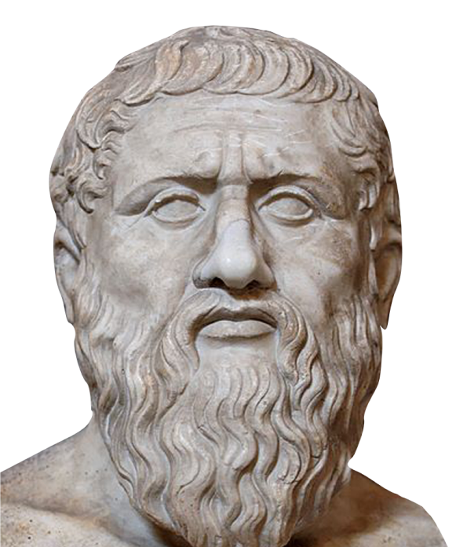

ANCI
 NT
GREEK PHILOSOPHY
in modern days
NT
GREEK PHILOSOPHY
in modern days

Table of content Table of content
Ever wondered how society came to be ?
- Ancient Greek Philosophy
- Modern Philosophy
- Pythagoras // Pythagorean Theorem
- Thales // Thales Theorem
- Aristotles // Educational Institutions
- Origin of the Universe
- Plato // Human Soul
- Foundations of Modern Religion
- Forms of Political Organisations
- Plato’s Republic
- Political Dialogues // Republic, Law, Stateman
- The Team
- The Magazine


01 What is Ancient Greek Philosophy


Ancient Greek philosophy is estimated to have begun sometime during the 6th century BC.
The usual topics the Greek philosophers discovered were contemplating about topics such as mathematics, ethics, biology, politics, religion, and astronomy.
“...Philosophy was used to make sense of the world using reason...”

Modern Philosophy
The teachings of ancient Greek philosophers are nowhere near irrelevant or forgotten. In contrary, it can add a lot of value if one learns about the wisdom and teachings of Socrates, Plato, or Aristotle, to name a few. In fact, the subjects that ancient Greek philosophers discovered, such as astronomy, mathematics, politics, and ethics are applied to many modern day discoveries and ideologies.
Education Education Education Education Education Education

Pythagoras and the Pythagorean theorem
Pythagoras
Pythagoras was an ancient Ionian Greek philosopher and the founder of Pythagoreanism. His political and religious teachings were well known and influenced the philosophies of Plato, Aristotle and through them, Western philosophy. The teaching most identified with Pythagoras is “metempsychosis” which holds that every soul is immortal and upon death, enters into a new body. Pythagoras was credited with many mathematical discoveries, including the Pythagorean theorem. Pythagoreans believed that all things were made of numbers. The number one represented the origin of all things and the number two represented matter. The number three was an “ideal number” because it had a beginning, middle and an end according to the Pythagoreans. Furthermore they believed that odd numbers were masculine and that even numbers were feminine. The number five represented marriage because it was the sum of two and three.
The Theorem
In mathematics, the Pythagorean theorem is a fundamental relation in Euclidean geometry
among
the three sides of a right triangle. It states that the area of the square whose side is
the
hypotenuse is equal to the sum of the areas of the squares of the other two sides. This
theorem can be written as an equation relating the lengths of the legs a, b and the
hypotenuse c.
a2 + b2 = c2
The theorem has been proven numerous times by many different methods - possibly the most
for
any mathematical theorem. The theorem can be generalized in various ways: to
higher-dimensonal spaces and to object that are not right triangles.


 Thales // Thales' Theorem
“if A, B, and C are distinct points on a circle where the line AC is a
diameter, the angle ABC is a right angle.”
Thales // Thales' Theorem
“if A, B, and C are distinct points on a circle where the line AC is a
diameter, the angle ABC is a right angle.”
Thales
Thales or Thales of Miletus was a Greek mathematician, astronomer and pre-Socratic philosopher. He was one of the Seven Sages of Greece. Many, most notably Aristotle, regarded him as the first philosopher in the Greek tradition. He is often referred to as the Father of Science. Thales is recognized for breaking from the use of mythology to explain the world and the universe, instead explaining by offering naturalistic theories and hypotheses. Thales hypothesised that the nature of matter was a single material substance: water.

aRISTOTLE AND EDUCATIONAL INSTITUTIONS
aRISTOTLE
Aristotle was a Greek philosopher and polymath during the Classical period in Ancient Greece. Taught by Plato, he was he founder of the Lyceum, the school of philosophy and the Aristotelian tradition. His writings cover many subjects including physics, biology, zoology, logic, ethics and many more. Aristotle provided a complex synthesis of the various philosophies existing prior to him. It was above all from his teachings that the West inherited its intellectual lexicon, as well as problems and methods of inquiry. As a result, his philosophy has exerted a unique influence on almost every form of knowledge in the West and it continues to be a subject of contemporary philosophical discussion.

 03
03


03 End of the universe? Origin
Origin of the universe
The creation myth
The ancient Greek philosophers believed that the world began with emptiness that they called Chaos. This proceeded with the formation of the earliest deities that represented different aspects or layers that were necessary for the creation of a functioning universe. These three gods were Gaea, Tartarus, and Eros. Gaea was considered as the embodiment of the Earth, Tartarus was representing the underworld - the place where the wicked go to suffer and the Titans get punished for their deeds, Eros was the embodiment of sensual love. After the creation of love, Gaea and Chaos started to create everthing that we sense but also beyond our senses that exists in the universe. This all led to the birth of the darkness - Erebus, and night - Nyx. This union gave life to the bright upper air - Aether and the Day - Hemera. Afterwards the Fate - Moros, the Doom - Ker, the Death - Thanatos, the Sleep Hypnos, the Dreams - Oneiroi, the Old Age - Geras, the Pain - Oizus, the Revenge - Nemesis, the Strife - Eris, the Deceit - Apate, the Sexual Pleasure - Philotes, the Blame - Momos, and the Daughters of the Evening - Hesperides.
Uranus - the embodiment of the Starry Sky together with Gaea gave life to three Cyclopes - a race of one-eyed giants, three Hecatoncheires - strong giants with fifty heads and one hundred arms, and twelve Titans - a family of giants that were later overthrown by the Olympian gods.

Plato's human soul
According to Plato’s teachings, he explained that every human soul is divided into three parts -
Rational
λογιστικόν
This is the first part of the human soul. It functions using logic and rational
thinking
in every decision and action it makes. It is easy for this part to differenciate
dreams
from reality.
What Plato firmly believed in was that all the people who are responsible for
governing
anyone should be deeply connected to their rational part to make decisions that are
just
and not based on one’s feelings or emotions.
Spirited
θυμοειδές
The human soul’s spirited part is the most heated and strongly emotional. Despite
being
responsible for all the strong emotion a person feels, it is especially focused on
anger
and temper.
It “comes to life”, for example, when the one feels like they’ve been mistreated or
when
one faces a great challenge and feels the urge to push themselves to the limits to
overcome it.
Spirited element thrives when winning or being praised and is also related to the
desire
to be and do good.
Appetitive
ἐπιθυμητικόν
The element that represents all the human desires for pleasures, physical
satisfactions,
and comfort. It is responsible for everything from the most basic desires such as
sense
of starvation and cravings, thirst, and fatigue.
This part actually includes uncountable amount of appetites that, according to
Plato’s
teachings, are often going against one another and causing trouble in the psyche.

Foundations of modern religion
Building blocks of religion
Religions consist of cognitive, neurological, behavioral and developmental traits that form a complex adaptive system.The underlying adaptive goal of religious systems is to foster social coordination within communities. The workings of religious systems can at their core be broken down into eigth primary building blocks.
These eigth building blocks are; authority, meaning, moral obligation, myth, ritual, sacred, supernatural agents and taboo. Religious sytems which require energy like all systems, are fuled by ritual behaviors.
Politics "Booooring"
Monarchy
Monarchy was the most commonly established way of governing ancient Greek cities from 200 to
800 B.C.E. Nowadays, monarchy means having either a queen or a king as a ruler. In ancient
Greek cities the ruler had to be a king, queens weren’t allowed to govern.
At first every king was chosen by the people of a Greek city-state. Later, as a result of
the pressure from kings, the children (most
often the eldest son) of a king got a hereditary right to the throne.
The tasks of a king were to create laws and be judges (they could even physically punish
people who weren’t following the laws or general rules), direct religious ceremonies, and
even lead armies in war situations.
As a “support system” kings had counils of aristocrats to give advice or later even to share
power.
Oligarchy
During 800 to 650 B.C.E. the oligarchs were in charge of ruling the Greek cities. In fact,
the word “oligarch” means “few” in Greek and the way of governing was named so because the
power was often in the hands of a small group of wealthy men.
The men who became oligarchs had usually inherited land from their families and became rich
from that, in some cases they were merchants as well.
Oligarchy was very unbalanced way of ruling which was clearly in favour of the rich since
the oligarchs made decisions and passed laws that were in favour of increasing their wealth.
Since the poor weren’t happy with this situation, the leaders of the army were usually
representing the poor and removing oligarchs from the power.
Democracy
In ancient Greece democracy meant that every citizen had the right to directly vote on
issues. This was achieved by creating assemblies where free men could speak up and also vote
for laws.
Eventually this system was proven to be ineffective and disliked by the public. The
assemblies were often bribed or influenced to vote, also, laws passed and then withdrawn
within short period of time.
Despite the failure of democracy in the ancient Greece, the concept of people having a say
in the politics managed to survive and is now one of the most effective systems of governing
in the world.
Nowadays, it is just more regulated and giving the citizens the right to elect their
representatives who then have the power to vote for or against laws.
Tyranny
This is the only regime that Plato has categorised as “unlawful”. Tyranny is a system where the powerholder is a person who has unlawfully taken the role to rule the people. Despite taking power this way sounding unethical, it was actually liked by the public since the tyrant was often a military leader who had proven their abilities to make the best decisions for the people, especially the poor, among which thew were especially popular. Some examples of the changes were for example confiscating aristocrats’ lands or being unkind to them in general. Eventually this ruling system failed, especially after the final tyrant - Hippias started abusing his power and censoring people who were against him.
Timocracy
Timocracy is listed as the first “unjust” regime in The republic by Plato. Timocracy is a
degenerated aristocracry where only property owners may be a part of the government.
It was ran a lot like a military, order, honour, and duty were highly valued and emphasised
and the whole system had one common goal to work towards.
With timocracy money, liberty, and equality are not of any importance.
Plato defined timocracy as a mix between aristocracy and oligarchy. There were two examples
of timocracies given in Plato’s republic, Crete and Sparta.
The city-state of Sparta was a totalitarian state and it was governed by the military
forces.
The same governing system was enforced in Crete as well where the military, called kratos
was in power and ambition was praised.
Plato's Republic
Plato's Republic
“The Republic” is a Socratic dialogue authored by Plato around 375 BC concerning the order,
justice and character of the just city-state, and the just man. Which is Plato’s best-known
work.
In the dialogue, Socrates talks with various Athenians and foreigners about the meaning of
justice and whether the just man is happier than the unjust man. They consider the natures of
existing regimes and then propose a series of different, hypothetical cities in comparison,
resulting in Kallipolis. An utopian city-state ruled by a philosopher-king. They also discuss
the theory of forms, the immortality of the soul, and the role of the philosopher and of poetry
in society.
3 dialogues
Theaetetus
This dialogue discusses the nature of knowledge and was written by Plato circa 369 B.C. Theaetetus is set in a wrestling school where Socrates and Theaetetus discuss three definitions of knowledge. Knowledge as perception, knowledge as true judgment and lastly knowledge as a true judgment with an account. Which means that one must have a justification for their proposition.
Law
Unlike most of Plato’s dialogues, Socrates does not appear in the Laws. The conversation is instead led by an Athenian Stranger and two old men. The questions of the Laws include, divine relevation, the role of intelligence in law-giving, the relations of philosophy, relgion and politics, the role of music, natural law and natural right.
Stateman
The Statesman dialogue was intended to clarify that to rule or have political power called for a specialized knowledge. The statesman was one who possesses this special knowledge of how to rule justly and well and to have the best interests of the citizens at heart.
05 Codesigners